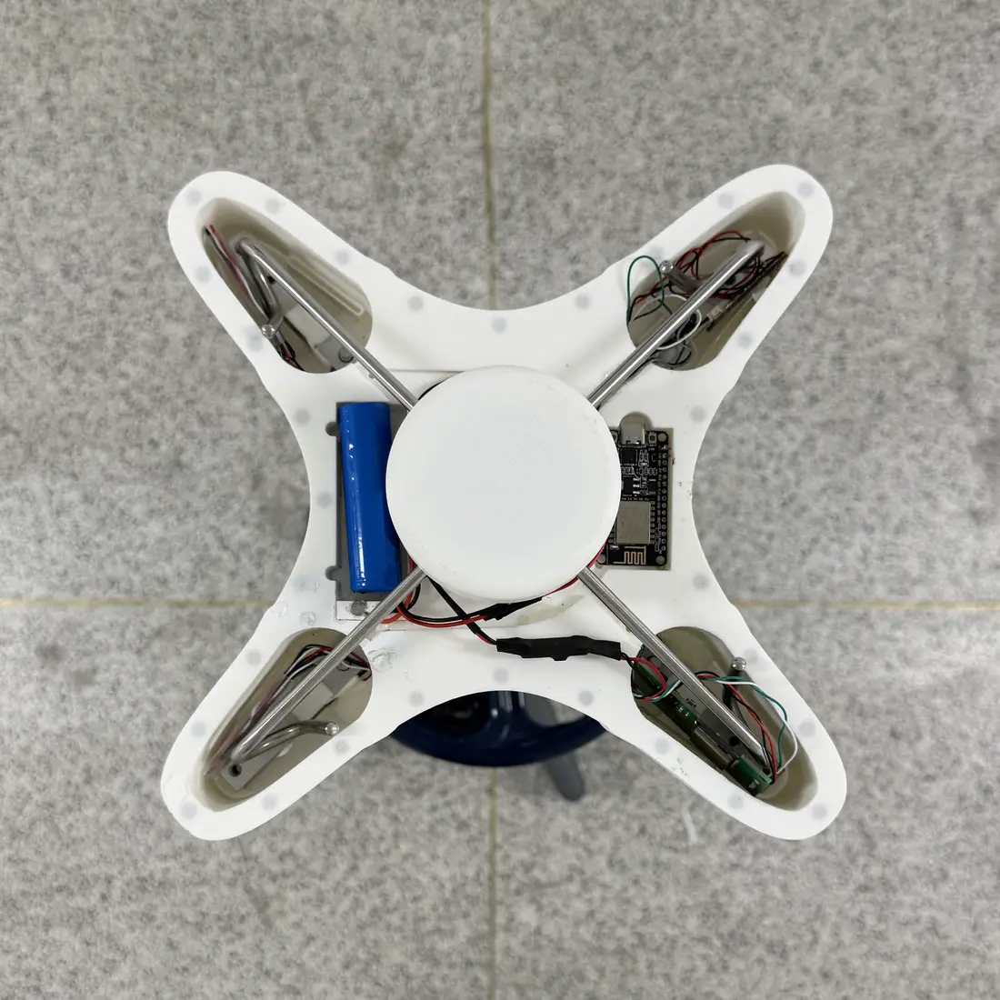
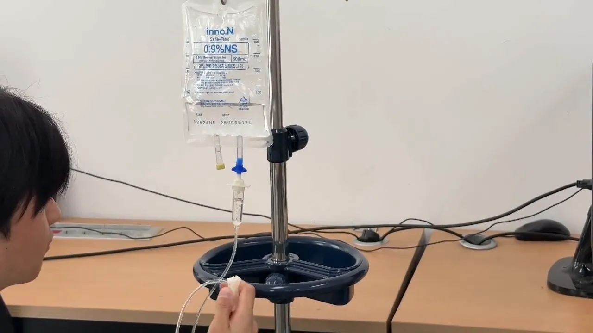
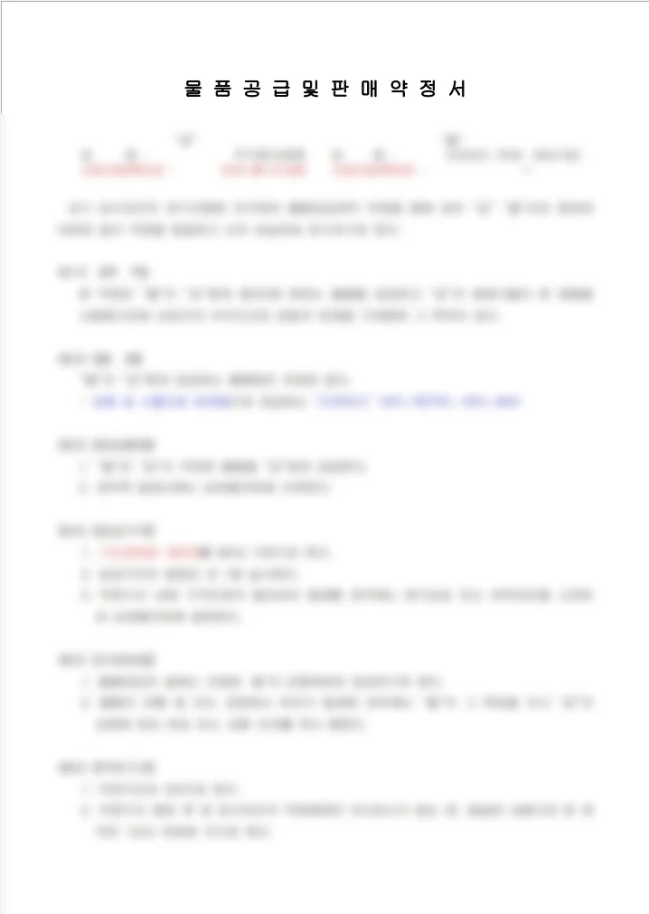
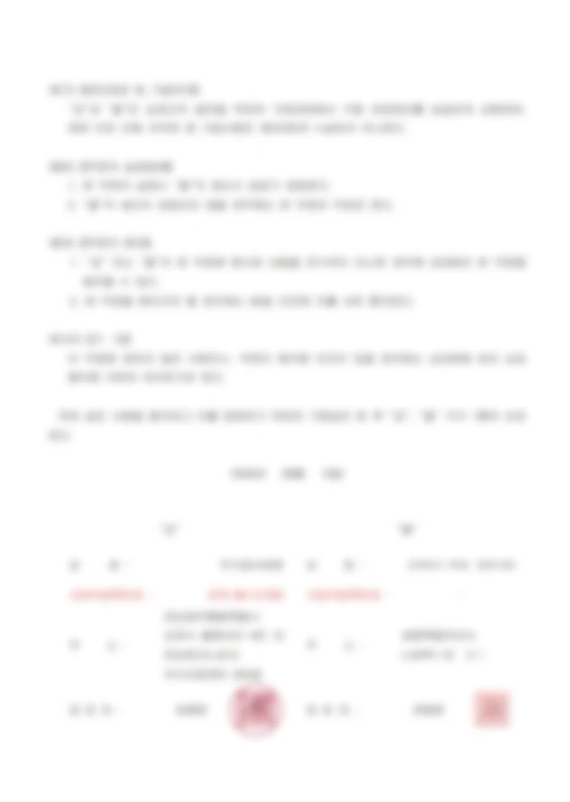
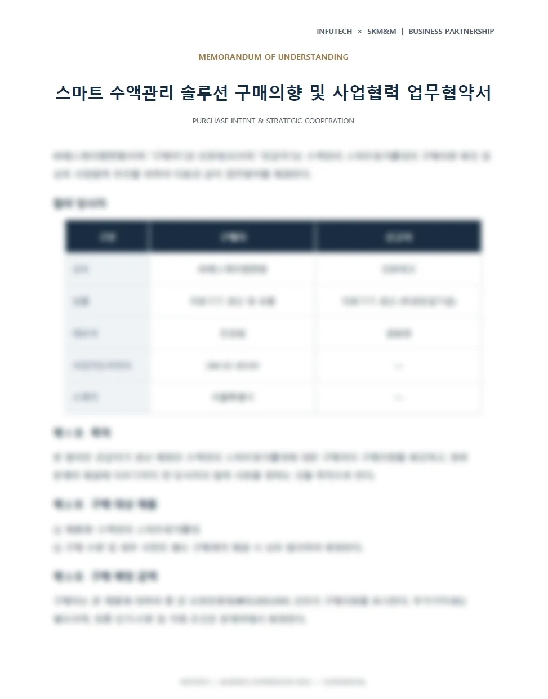
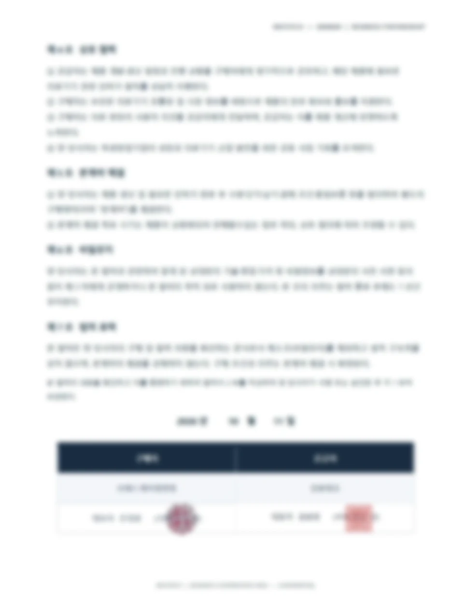

02 제품
그리고 실물로 만들었습니다



진료가 끝난 밤, 동물병원 입원실
수액은 지금도
들어가고 있습니다
그런데, 지켜보는 사람은 없습니다.
연출 이미지
01 문제
카테터 합병증
4개 중 1개
입원 동물 수액 카테터
합병증 26.7%
Haskey 2024 · 영국 19개 기관 · 정맥염 포함
확인 간격
1~2시간
수액 눈금 확인 권고 간격
그 사이 이상은 다음 순회에
AAHA 2024
1인 수의사 구조
10곳 중 7곳
수의사 1명이 진료 · 수술 ·
입원실을 함께 봅니다
농식품부 2025.6 · 5,312곳 중 3,815곳
계속 지켜볼 수 없다면, 이상이 생긴 순간 먼저 알려 줘야 합니다.
02 제품
INFURETRO
쓰던 폴대에 끼우기만 하면,
수액 이상을 먼저 알립니다
하우징 3D 렌더
02 제품

03 · 실제 시연
1폴대에 끼우고
2수액백을 걸면 무게 측정 시작
3유속 빠름 → 대시보드 · 휴대폰 알림
4유속 느림 → 알림
5유속 정지 → 알림
04 기술
24-bit ADC로
무게를 읽음
원신호 잡음을
1차로 걸러 냄
로드셀만으로 기울기를
추정해 흔들림 상쇄
정상 · 흔들림 · 당겨짐
· 줄 분리 · 소진
14.2%2.9%
잔량 최대 오차 · 단일 로드셀 대비 1/5
250/250
줄 분리 · 소진 감지 · 평균 2.8초
1/36
센서 비용 · 90만 원+ → 2.5만 원
내부 모의시험 · 모의 병실 1,000회 · 가상 AI 자이로 – INFUTECH 설계 · 우수논문 2편
05 검증

모의 병실
1,000회 내부 시험원광대 간호학과 · 현장 26곳 방문
창의적종합설계경진대회 · 2026
산업통상부장관상 · 공동 2위전국 73개 대학 149팀 · 최우수상
학회
우수논문상 2편국제 AIT 2026 · 국내 공동학술대회06 구매 협약




㈜씨엔 · 물품공급 약정
5,100만 원
KC 인증 후 효력
㈜에스케이엠엔엠 · 구매의향 협약
5,000만 원
비구속
약정 · 협약 합계
1억 100만원
약정 · 협약 원문 – INFUTECH (2026)
INFURETRO
폴대는 그대로, 수액은 놓치지 않게
INFUTECH